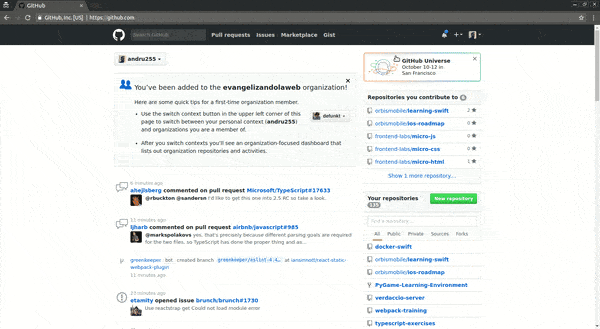

Welcome again, I explain the how to publish this blog into github
Understanding github pages
Github pages it’s amazing, exists many ways to create one, in my case I created a new repo into the github website, called andru255.github.io, because its the format to use [my-nickname].github.io

Reading the instructions when its created a new repo, we testing clone and put a single html file previously:
~ git clone https://github.com/andru255/andru255.github.io ~/my-sites/test-my-github-blog
~ cd ~/my-sites/test-my-github-blog
~ echo "This is my blog, A let's make it great :)" > index.html
~ git add .
~ git commit -am "test index.html"
~ git push origin master
Then, We navigate to https://andru255.github.io/
IMPORTANT : Github pages only shows static files in the browser like htmls, js, css, images, don’t process a php, py, rb files
Let’s continue with hugo
We need to generate a static files, first we need to locate into [my-site]:
~ cd ~/my-sites/[my-site]
Then, we need to edit config.toml file, and I changed this param:
baseUrl="http://example.org"
to
baseUrl="http://localhost:8000"
And why this url?, we try to test in local, how it works the hugo static output. So we test with the follow commands:
~ hugo -D
Where:
- -D, shows content marked as draft
That command generates a public folder, on that folder exists the generated output ready to publish (html, css, js)
So, we test with these commands:
~ cd public
~ python -m SimpleHTTPServer 8000
the last command creates a single http server ( more about that, in credits section).
Open in your browser: http://localhost:8000
And we can see our site alive! yay!
Github + Hugo
We understand the basic part of theirs, hands on:
~ cd ~/my-sites/[my-site]
Then, change mi baseUrl into config.toml:
baseUrl="http://example.org"
to
baseUrl="https://andru255.github.io/blog"
Then, generate the output
~ hugo -D
Great, I have output generated, sending to my github repo:
~ git add .
~ git commit -am "1st attempt: My blog ready"
~ git push origin master
1st attempt
Trying to submit my changes…
Oh! a little trouble, I testing with my index.html (I don’t explain here about git commands), in this escenario I forced my changes with this command:
~ git push origin +master:master
Good! … Visiting https://andru255.github.io/blog
Holy ..! I can see only a 404 :(
2nd attempt
Reading the github docs
I generate the static output into a blog instead of public folder, I modify the config.toml files, adding this line:
publishDir = "blog"
Then, run again in console:
~ hugo -D
Great! If exists a new folder called blog, please remove the public folder for not confuse.
Well done, submiting my changes:
~ git add .
~ git commit -am "2nd attempt: My blog with new output"
~ git push origin master:master
NOTES
- May be shows a warning like a empty repository when cloning that repo first time, but don’t worry
- If we clone with https protocol, It’s necessary puts our credentials when trying to push a change
- I changed the baseUrl path from https://andru255.github.io to https://andru255.github.io/blog for github pages rules